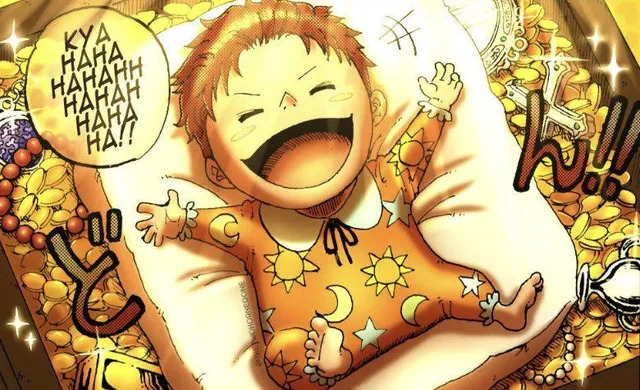

Bitácora del Pelirrojo
Hace 39 años
ROGER SE ENCUENTRA A SHANKS EN UN COFRE TRAS EL INCIDENTE DE GOD VALLEY EN DICHA ISLA. EL NIÑO SONRÍE MIENTRAS VE A LA TRIPULACIÓN DE ROGER.
Hace 30 años
Shanks y Buggy forman parte de la tripulación de Roger.

Hace 28 años
Shanks y Buggy forman parte de la tripulación de Roger.

Hace 27 años
Participa en la batalla de Edd War junto a Roger.

Hace 26 años
Conoce a Teach. Roger parte hacia Laugh Tale sin él.

Hace 22 años
Presencia la ejecución de Roger. Rechaza formar banda con Buggy.

Hace 13 años
Roba la Fruta Gomu Gomu del Gobierno Mundial.

Hace 12 años
Luffy come la Gomu Gomu. Shanks pierde un brazo. Detiene a Tot Musica.

Hace 6 años
Es nombrado Yonkō oficialmente.

En la actualidad
Shanks decide ir a por el One Piece tras ver la recompensa de Luffy como Nika.